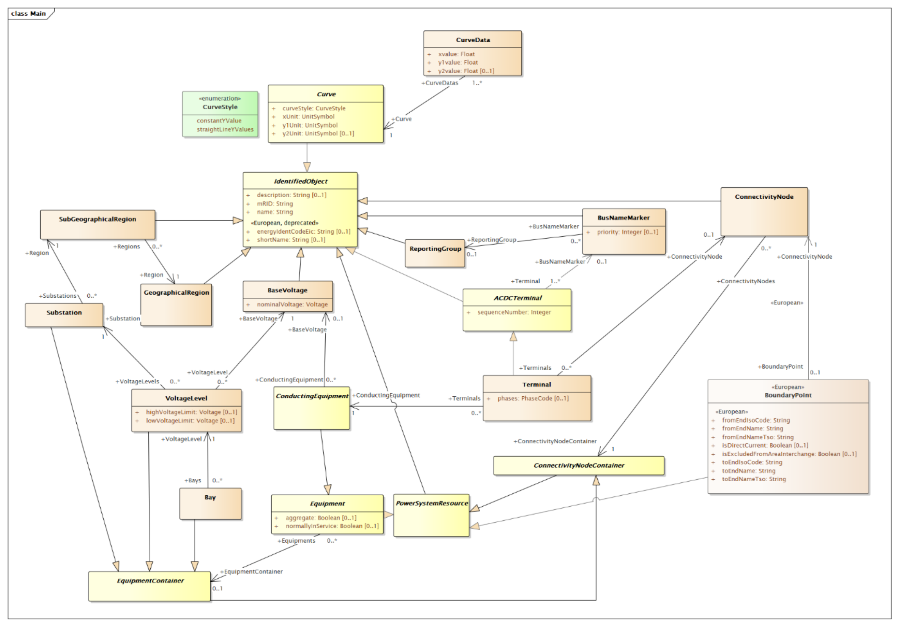

About the Core Equipment Vocabulary
This part defines the IEC 61970-450-series and IEC 61968-13 related profiles that are included in CGMES. It includes the references to published standards and additional constraints defined to the relevant standard. If the relevant edition of a standard is not published, it also includes the profile definition and the standard’s constraints.

There are various levels at which an exchange of power system data/models is necessary. A pan-European model exchange level covers the territory of all system operators (TSOs and DSOs). Regional model exchanges can be realised between different TSOs in one or more synchronous areas. A model exchange on the national level includes interfaces between TSOs (in case there are multiple TSOs on a national level) as well as between different DSOs.
The purpose of model exchanges is not only to exchange the data from one authority to another but also to satisfy the ultimate goal, namely, to perform common studies using shared data. All parties involved in the process should be able to perform the same types of studies and share project tasks between different parties which are using different power system analysis applications. Indeed, the interoperability between different applications used in the exchange process is therefore crucial in both reaching seamless data exchange and obtaining comparable study results when using this data. The CGMES covers these European and system operators (TSOs and DSOs) business processes by defining the following main types of exchanges valid for a particular study or process:
- Exchange of boundary set: An exchange of a boundary Set is necessary to prepare an exchange of an internal system operator model and to merge a common grid model. E.g. the ENTSO-E Network Modelling Database (NMD) is used to maintain the Boundary Set covering the pan-European area where all TSOs negotiate and agree on the boundary information.
- Exchange of an internal TSO model, i.e. individual grid model (IGM2): A number of business processes require each TSO to provide models of its internal territory. To describe its internal territory in a single stand-alone exchange, a TSO is treated as a single model authority set and shall be able to exchange datasets complying with profiles defined in the CGMES. The TSO prepares its internal model in such a way that it is easily and unambiguously combined with other TSO internal models to make up complete models for analytical purposes. This type of exchange can also be applied for the interface between a TSO and a DSO, where models covering transmission or distribution parts of the power system can be exchanged based on a mutual agreement between the TSOs and the DSOs. In this case, and if a TSO requests a DSO model, the DSO would provide its model in accordance with CGMES definitions.
- Exchange of a common grid model: A common grid model refers to the concept of having one model which can be used for multiple purposes. The specification describes what is needed to create a merge model of multiple TSOs' Individual Grid Models (IGM) of their responsible territory into a regional or pan-European model. Various business processes will require specific implementation of the profiles part of the CGMES and the exchange of respective instance files to meet interoperability inside the business process. The Common Grid Model meta-model description will ensure interoperability across the business process.
Business processes (e.g. system development planning, protection planning, operational planning, operation, fault study/simulation, market operation, etc.) are, of course, more complex than these operations, but what is important to note is that all processes are supported using only these basic kinds of interoperation. In addition, business processes shall define or precise, where necessary, the content of the data exchange within the scope of the defined profiles. For instance, OperationalLimitSet can be used to constraint any conducting equipment. It is up to the business process to define if any equipment is mandatory to have operational limits. Note that each power system model normally consists of multiple datasets (distribution) as defined in CIM standards and further specified by CGMES.
The CGMES supports node-breaker (NB) and bus-branch (BB) model exchanges.